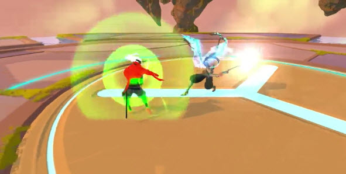
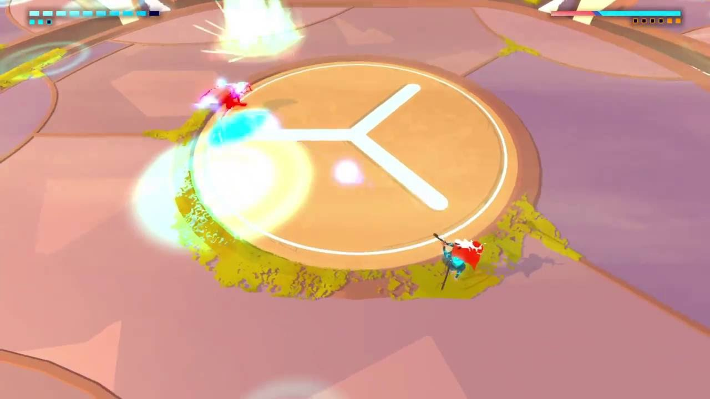

This boss is actually quite interesting. First of all, this boss is commonly agreed to be the game’s major difficulty spike. This boss is the main reason why people quit this game, so the fact is that you either beat this boss or you give up on the game as the bosses just get harder from here. The other strange part is that she is the only boss that offers an alterntitve to fighting. You actually have the option to stay with her and get the secret ending. This is also ironically the closest thing you can get to happy ending as all other endings involve you dying. Now The Song’s story is that she was the person who came with idea to create the prison so you can live peacefully. She then says that the treatment you got in the begining in of the game was “an accident”. Let’s move onto her design and I have to say she is probaly one of the most well designed bosses in the game. The angel look is absolutely perfect, the way how she looks like both a caring, kind character to a swift, powerful bringer of justice. The voice actress is also absolutely amazing as she seemlesly changes from a caring motherly figure to an arogant and demanding woman. Now for the actual fight. Unfortunately The Song is an incredibly mobile gunner who shoots so many bullets that it’s ridiculous. You also fight her on a giant floating platform so you are able to fall of the arena. Her basic attacks mainly consist of firing a large amount of bullets and orbs which can be easily destroyed or dodge. She will also go to the edge of the arena and fly at you at high speed, despite what you may think you are able to parry her when she does this.

She has no melee phases for the first few phases of the fight. Her second phase is where she starts to get harder. She starts to use lasers here and will use them when she does her swooping attack. In her third phase she will use shots that divide into sevral smaller shots and will start using a large amount of bullets. In her fourth phase she will raise four smaller platforms on the sides of the arena. She will now fire two large waves of bullets from her crossbows. She will also cause a massive amount of bullets apear in the main arena, when she does this you must run to the platforms on the edges of the main arena. You can then dive into the middle and attempt to fight her in the maelstorm of bullets or stay on the outer plaforms and dodge the shots coming towards. She will also summon lighting from the sky, a blue circle showing where it will strike. This also the part of the fight where she starts having a melee phase which is pretty much her shooting you in the face and the occasional wave attack.
During the fifth phase she will have have lightning strike quite often and will do it while perfoming other normal attacks.
Her main danger during this phase is that she will section off the outer platforms and will then start firing a rotating energy beam and shockwaves. During her melee phase she will have a longer melee strings, as well as being able to combo wave and melee attacks.Now her final phase is a bit complicated so make sure you pay attention. She will go to the middle of the arena and spawn four pillars on the outer platforms. These pillars will generate a shield around The Song. You will have to destroy the pillars in order to get a shot at her, but each pillars you destroy will trigger another attack that will continue until all pillars destroyed. At first the song will fire waves of destructible bullets. Upon destroying the frist pillar the song will start shooting a large rotating yellow beam. Destroying the second one will add red shockwaves. The third one will add lightning strikes. The last one will destroy the shield and end the attacks trigerred by the pillars but is also the most likely part of the fight to kill as you will most likely be at low healt while doing it. The Song will create three layers of rotating shockwaves that you must dodge through to get to her. Once you get to her a single melee attack will end the fight.